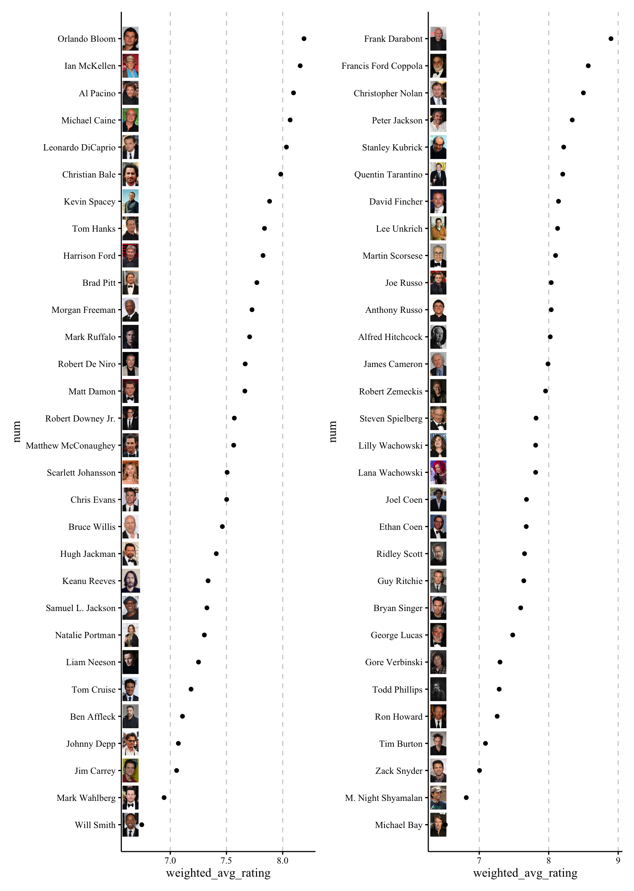
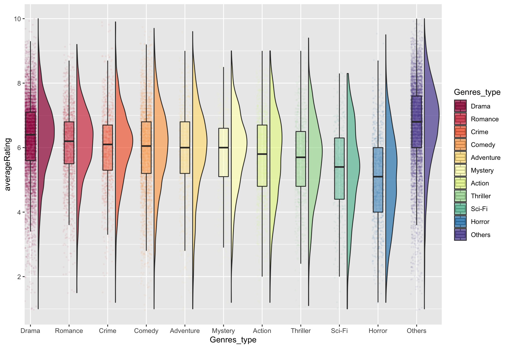
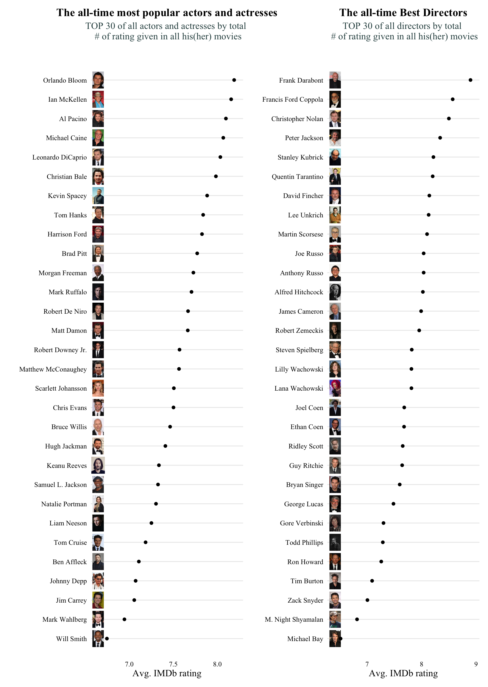

Chapter 5 Results
At this part, we want you to imagine you are a producer of a film company or an investor that are evaluating on a movie construction project.
Then this page will serve as a cookbook for you to make such decision!
5.1 Get Ready to Fail
From a historical standpoint, we look a strong long tail effect on film industry, that is, minority make up to be majority.

From the main graph, we see the peaks of the popularity (# of votes people give in IMDB) goes higher along with more and more movies are released seen in the bottom subgraph.
However, the left graph shows a severe concentrating on movies with very low votes. Let dive in to see this “80-20 rule”.
Surprisingly, “80-20 rule” is now: 80% movies receives 1.864% of votes given to them, and this number is more low for commericial statistics like box office.
Why? Because most of the movies are rarely known to genreal public. For example, I asked several friends and none of them ever heard of Vice Squad, which receives 666 votes and this number is higher than 85% of the movies in the entire IMDb database.
5.2 Follow the Best Practices
Despite this long tail effect, there are still movies that achieved both commercial success (high profit and high box offices), and high rating:

These plots show the all time top 30 movies that generates highest box office.
In the top right area (ROI >= the median 6.74, Rating >= the median 7.25), we can see
The Lord of the Rings achieves 12 times return on investment while maintains a high rating close to 9.
Avatar gets highest box office (2,845,899,541 dollars) in film history.
5.3 Choose the Genre
5.3.1 How genres make a difference?
To begin, we can see that the various statistics of different genres are quite disparate.
Dramas have the highest amount of films, with almost 3000 films.
Sport is the most recent genre to emerge, with many genres having new works in the 1920s-1940s
History, war, and other subjects have an average duration of more than 2 hours
Documentary’s average ROI reached a maximum of 4.7, due to the relatively low cost of actors but highest fame, while Box office is higher Adventure and Action ROI in the vicinity of 3. Animation has both a high ROI as well as a high box office.
5.3.2 Genre affects profitability a lot

In terms of box office, TOP 3 genres are Animation, Adventure, and Action, while the last 3 are Horror, Romance, and Drama. It consistent with our common sense.
While all genres show a concentrating around low box office, movies in Actions seem to have a more flat transition into higher box office.
Those above 2.5B ‘outliers’ are in Adventure, Action, Fantasy and Drama.
5.3.3 But not that much difference in rating

As the rating is weighted calculated for the all the votes of 1 movie, it looks kind of normally distributed around the mean.
Biography, surprisingly, have a largest average rating. This might due to people like to give higher rating to esoteric movies, especially those they think they understand the hidden meaning.
The group differences of genres are not less than box office. Biography have about 2 scores higher than the worst of 13 popular genres, the Horror movie.
5.4 Pick a good title
- Wordcloud for titles of all movies
- Wordcloud for titles of movies with > 10,000,000 $ box office
Although words like “love”, “story”, etc are appearing in the most number of movies, there is no significant sigh of making more money with those words.
5.5 Build your crews
Now, with a good script for your selected genres, you want to find the proper directors and actors to make the film happen.
5.5.1 Who makes those best movies

5.5.2 Rating & ROI vs. Interaction Between Actors and Directors

For most of the actors and directors that collaborate, profitabilities are not clearly correlated with ratings (except for Chris Evans!)
5.6 Understand how ratings work
It’s natural to have a rating below 9 scores for popular movies. Ratings goes done when more classes of people rates the movies. It’s really hard for a popular movie to serve everyone’s preference.

- We can see that as the number of votes increases, there seems to be an invisible boundary that prevent them from being rate highly. On the contrary, all the movies with extremely high ratings have very few number of votes. Therefore, producers should find a balance between popularities and ratings.